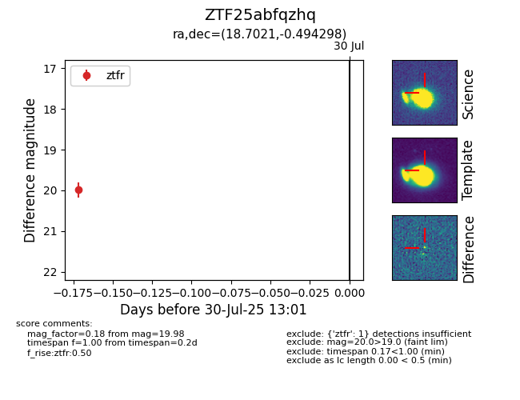

Target ZTF25abfqzhq at 2025-07-30 13:01, see:
FINK: fink-portal.org/ZTF25abfqzhq
Lasair: lasair-ztf.lsst.ac.uk/objects/ZTF25abfqzhq
ALeRCE: alerce.online/object/ZTF25abfqzhq
alt names
ZTF25abfqzhq (ztf,fink)
coordinates:
equatorial (ra, dec) = (18.7021,-0.49430)
galactic (l, b) = (135.7908,-62.78111)
photometry
last ztfr=19.98
1 ztfr detections
